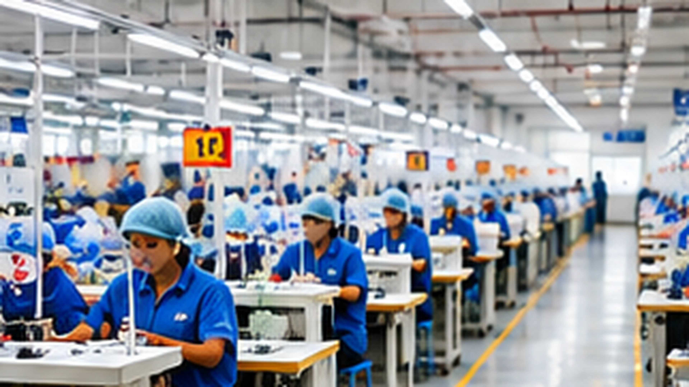

BEYOND
EXPECTATIONS.
Built on experience. Driven by innovation.
Made for what’s next.
We don’t just make garments.
We bring experience, care
and possibility together.
IZON Apparel brings deep textile industry knowledge and integrated manufacturing capabilities together to create apparel with confidence — from first concept to final delivery.
Meet IZON
Capability you
can count on.
In company profile: 100 total
Reported production capacity
Figures are from the supplied company profile and should be reconfirmed before publication.
From possibility
to product.
Every stage matters. Explore how our integrated approach connects the making process.

The beginning of every fabric.
The process begins with fabric creation, laying the foundation for quality apparel.
One commitment.
Every step of the way.
Thoughtful processes. Experienced people. An unwavering focus on quality, efficiency and reliability.

Made possible
by the people
behind it.
From sampling and cutting to stitching and inspection, discover the spaces, processes and teams that support our manufacturing journey.
Explore our facilities
YOUR VISION.
OUR EXPERTISE.
Looking for a manufacturing partner? Let’s start the conversation.
Start a conversation